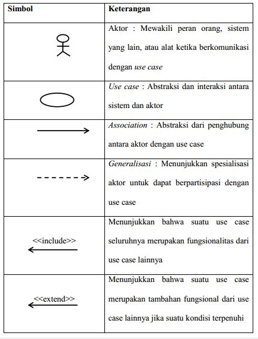
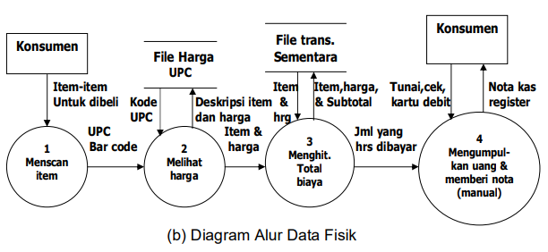
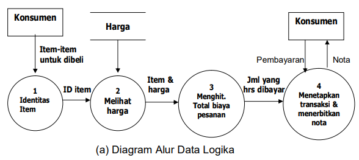

Informasi merupakan sebuah elemen penting dalam kehidupan manusia yang semakin lama semakin maju.
Dengan adanya informasi, kita bisa mengetahui beberapa hal yang sedang terjadi di sekitar kita.
Tanpa informasi, kita menjadi buta akan keadaan sekitar, maka dibuatlah tempat untuk menyimpan
informasi yang disebut dengan perpustakaan.
Perpustakaan adalah sebuah tempat dimana didalamnya terdapat banyak ilmu pengetahuan yang sangat bermanfaat bagi masyarakat.
Peranan perpustakaan pada kehidupan bermasyarakat adalah sebagai tempat menyimpan karya-karya masyarakat,
sebagai tempat mengalirnya informasi, sebagai tempat memperoleh ilmu.
Seiring dengan perkembangan teknologi, sistem terkomputerisasi menjadi suatu kebutuhan dalam segala unit usaha.
Selain unit usaha terdapat juga unit perpustakaan yang memiliki peran sebagai salah satu tempat untuk mencari informasi.
Unit perpustakaan pada dasarnya membutuhkan pengelolaan terhadap aset-aset yang dimilikinya seperti pendataan aset,
proses transaksi pinjam-meninjam.
Oleh karena itu, dibuatlah sebuah aplikasi Sistem Informasi Manajemen Perpustakaan berbasis web supaya memudahkan sekolah x
untuk mengelola pendataan dan transaksi yang terjadi di perpustakaan sekolah tersebut. Sistem ini dikembangkan dengan
menggunakan Bahasa pemrograman PHP dengan aturan sebuah web supaya lebih tersruktur menggunakan HTML, CSS.
- PHP
PHP (PHP: Hypertext Preprocessor) adalah sebuah bahasa pemrograman server side scripting yang bersifat open source.
Sebagai sebuah scripting language, PHP menjalankan instruksi pemrograman saat proses runtime. Hasil dari instruksi tentu akan berbeda tergantung data yang diproses.
PHP merupakan bahasa pemrograman server-side, maka script dari PHP nantinya akan diproses di server. Jenis server yang sering digunakan bersama dengan PHP
antara lain Apache, Nginx, dan LiteSpeed.
Selain itu, PHP juga merupakan bahasa pemrograman yang bersifat open source. Pengguna bebas memodifikasi dan mengembangkan sesuai dengan kebutuhan mereka.
- X (Cross Platform)
Maksudnya adalah, Xampp dalam dijalankan di berbagai perangkat sistem operasi yang ada, misalnya Windows, Linux, Mac OS, dan Solaris.
Dari ke semua sistem operasi tersebut, software ini bersifat open source atau dapat digunakan secara gratis.
- A (Apache)
Apache merupakan aplikasi web server yang bertugas untuk menciptakan halaman website yang benar berdasarkan kode program PHP yang ditulis oleh pengembang web (developer).
Memungkinkan juga untuk mengakses sistem database terlebih dahulu untuk mendukung halaman situs yang dihasilkan.
- M (MySQL / MariaDB)
MySQL merupakan salah satu aplikasi database server yang menerapkan bahasa pemrograman SQL (Structured Query Language).
Fungsi dari MySQL sendiri adalah untuk mengelola dan membuat sistem basis data secara terstruktur dan sistematis.
- P (PHP)
PHP adalah bahasa pemrograman khusus berbasis web untuk kebutuhan pada sisi server (back end). Sehingga, PHP sangat memungkinkan untuk membuat suatu halaman website menjadi lebih dinamis dengan menerapkan server-side scripting.
PHP juga mendukung manajemen sistem pada Oracle, Postgresql, Microsoft Access, dan lain sebagainya.
- P (Perl)
Perl merupakan bahasa pemrograman untuk segala kebutuhan (cross platform) yang berfungsi sebagai penunjuk eksistensi dari PHP.
Perl biasanya banyak digunakan untuk website development pada sistem berbasis CMS (Content Management System) seperti WordPress.
- Use Case Diagram
Use case diagram adalah satu dari berbagai jenis diagram UML (Unified Modelling Language) yang menggambarkan hubungan interaksi antara sistem dan aktor. Use Case dapat mendeskripsikan tipe interaksi antara si pengguna sistem dengan sistemnya.
Tentunya, use case diagram merupakan sesuatu yang mudah dipelajari. Langkah awal untuk melakukan pemodelan, tentu perlunya suatu diagram yang mampu menjabarkan aksi aktor dengan aksi sistem itu sendiri, seperti yang terdapat pada use case diagram.
Adapun, fungsi dari use case diagram sebagai berikut:
- Berguna memperlihatkan proses aktivitas secara urut dalam sistem.
- Mampu menggambarkan proses bisnis, bahkan menampilkan urutan aktivitas pada sebuah proses.
- Sebagai bridge atau jembatan antara pembuat dengan konsumen untuk mendeskripsikan sebuah sistem.
- Komponen Use Case Diagram

Gambar 1. Komponen Use Case
- Bentuk Data Flow Diagram
Terdapat dua bentuk DFD, yaitu Diagram Alur Data Fisik, dan
Diagram Alur data Logika. Diagram alur data fisik lebih
menekankan pada bagaimana proses dari sistem diterapkan,
sedangkan diagram alur data logika lebih menekankan proses-proses
apa yang terdapat di sistem.
5.1 Bentuk Alur Data Fisik (DADF)
DADF lebih tepat digunakan untuk menggambarkan sistem yang ada
(sistem yang lama). Penekanan dari DADF adalah bagaimana
proses-proses dari sistem diterapkan (dengan cara apa, oleh siapa
dan dimana), termasuk proses-proses manual.
Untuk memperoleh gambaran bagaimana sistem yang ada
diterapkan, DADF harus memuat :
- Proses-proses manual juga digambarkan.
- Nama dari alur data harus memuat keterangan yang cukup terinci
untuk menunjukkan bagaimana pemakai sistem memahami kerja
sistem.
- Simpanan data dapat menunjukkan simpanan non komputer.
- Nama dari simpanan data harus menunjukkan tipe penerapannya
apakah secara manual atau komputerisasi. Secara manual
misalnya dapat menunjukkan buku catatat, meja pekerja. Sedang
cara komputerisasi misalnya menunjukkan file urut, file database.
- Proses harus menunjukkan nama dari pemroses, yaitu orang,
departemen, sistem komputer, atau nama program komputer yang
mengakses proses tersebut.

Gambar 2. Diagram Alur Data Fisik
5.2 Bentuk Alur Data Logika (DADL)
DADL lebih tepat digunakan untuk menggambarkan sistem yang
akan diusulkan (sistem yang baru). Untuk sistem komputerisasi,
penggambaran DADL hanya menunjukkan kebutuhan proses dari
sistem yang diusulkan secara logika, biasanya proses-proses yang
digambarkan hanya merupakan proses-proses secara komputer saja.

Gambar 3. Diagram Alur Data Logika
- Syarat-Syarat Pembuatan Prototype
Prototipe adalah sebuah bentuk dari model awal maupun contoh yang akan dilakukan pembuatan untuk melakukan kegiatan uji coba dari sebuah konsep yang dimana akan dilakukan pengenalan. Prototipe sendiri adalah sebuah tahapan kedua yang akan dilakukan sebelum melakukan kegiatan produksi massal. Sehingga tahap pertama adalah pembuatan ide maupun menyusun konsep awal dan setelahnya akan melakukan pembuatan dari prototipe. Dengan adanya prototipe sendiri maka kita akan melakukan pemilimalisiran kesalahan dalam membuat keputusan.
Syarat-syarat yang diperlukan untuk membangun prototype adalah :
- Memiliki kesesuaian dengan sebuah bentuk asli yang ada
- Memiliki sebuah potongan dari detail yang ada
- Memiliki sifat skalatis